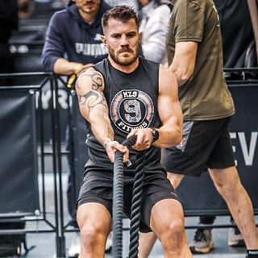
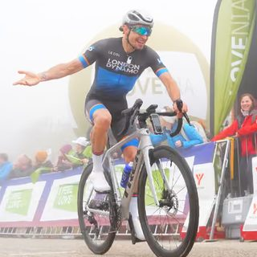
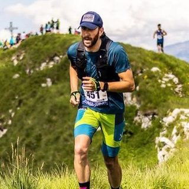

MD
Atleta verificato
Marquis Dendy
US long jumper and sprinter competing on the international track and field circuit.
Il roster
Sport Endorse riunisce oltre 9.000 atleti e creator d'élite verificati, provenienti da oltre 280 sport e più di 85 Paesi. Ogni profilo è verificato individualmente — identità, livello sportivo e audience — e mostra sport, località, reach, engagement e ambiti di collaborazione che i brand cercano per preselezionare con sicurezza. In basso: una selezione di atleti verificati, nel formato reale della piattaforma.
Atleti in evidenza
Una selezione di atleti verificati su Sport Endorse, così come appaiono ai brand. La rosa completa è consultabile nella piattaforma.
US long jumper and sprinter competing on the international track and field circuit.

Professional rugby union winger and Ireland international known for his attacking play.

Dutch international swimmer and backstroke specialist competing on the world stage.

English footballer with a long career across the Premier League and Football League.

English professional golfer competing on the Ladies European Tour.

German international sprint hurdler with major-championship experience.

US professional footballer building his profile on and off the pitch.

Austrian ice and open-water swimmer competing in extreme-endurance events.

Atleta HYROX PRO e personal trainer, fondatore di MZ9 Fitness. Gareggia nella categoria Pro del circuito internazionale HYROX, dove forza e resistenza contano allo stesso modo. Vive e si allena tra l'Italia e il Regno Unito.

Ciclista su strada e content creator, scalatore di natura che vive a Londra e corre con il team London Dynamo. Tra criterium, salite e recensioni tech, racconta il ciclismo a una community appassionata tra Italia e Regno Unito.

Runner italiano specializzato nella corsa in montagna e nel trail running. Dai vertical alle skyrace, gareggia su sentieri e vette portando il pubblico tra le montagne piu belle d'Italia.
FAQ
Sì — questi sono una selezione di atleti verificati su Sport Endorse. La piattaforma completa ospita oltre 9.000 atleti e creator verificati individualmente in più di 280 sport; i brand esplorano la rosa completa dopo una demo o l'abbonamento.
Ogni atleta viene verificato individualmente prima di comparire in piattaforma: identità, livello sportivo e audience social collegate vengono controllati, così i brand non trattano mai con profili non verificati o numeri di follower gonfiati.
Sì. I brand filtrano oltre 9.000 atleti verificati per sport (280+ coperti), posizione (85+ paesi), dimensione dell'audience, engagement e affinità con la campagna — oppure pubblicano un brief e lasciano che gli atleti giusti si candidino direttamente.
Una demo di 20 minuti ti mostra ricerca dal vivo, brief e report con atleti rilevanti per il tuo brand.
Prenota una demo